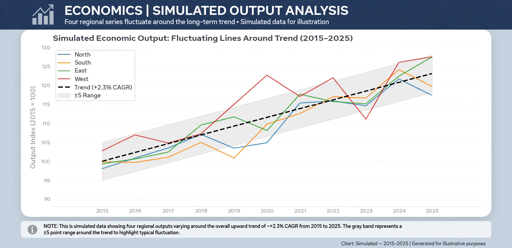

Real business-cycle theory
| Real business-cycle theory | |
|---|---|
 | |
| Field | Macroeconomics |
| Key figures | Finn E. Kydland, Edward C. Prescott, John B. Long, Charles Plosser |
| Founding paper | Kydland & Prescott, "Time to Build and Aggregate Fluctuations" (1982) |
| Core claim | Business cycles are optimal responses to real (technology) shocks |
Real business-cycle theory (RBC theory) is a school of macroeconomics holding that fluctuations in output and employment are primarily caused by real shocks — above all changes in technology and productivity — rather than by monetary or demand disturbances, and that these fluctuations represent efficient, optimising responses of households and firms to the changed environment. Developed in the early 1980s, chiefly by Finn Kydland and Edward Prescott, RBC models became the workhorse of academic macroeconomics and the ancestor of the dynamic stochastic general equilibrium (DSGE) models used by central banks.
The model
The canonical RBC model treats the economy as a single representative household maximising utility over consumption and leisure subject to a production technology subject to random productivity shocks (measured by the Solow residual). Kydland and Prescott's 1982 method of calibration — assigning parameter values from microeconomic evidence and long-run growth facts, then simulating the model — showed that technology shocks alone could reproduce a large share of the volatility and co-movement of postwar US output, consumption, investment and hours worked.
Implications
Because fluctuations in the basic model are Pareto-efficient responses to shocks, RBC theory drew the controversial conclusion that recessions require no stabilisation policy and that observed unemployment reflects voluntary intertemporal substitution of leisure. Money is neutral in the baseline model, so monetary policy cannot systematically affect real activity.
Criticism and development
Critics question whether measured productivity shocks are truly exogenous technology changes (they may reflect demand-driven utilisation), whether labour supply is elastic enough to generate observed employment swings, and the theory's dismissal of monetary factors and involuntary unemployment. New Keynesian models later combined the RBC/DSGE framework with sticky prices and wages, restoring a role for monetary policy. Kydland and Prescott received the 2004 Nobel Memorial Prize in Economic Sciences in part for this work.